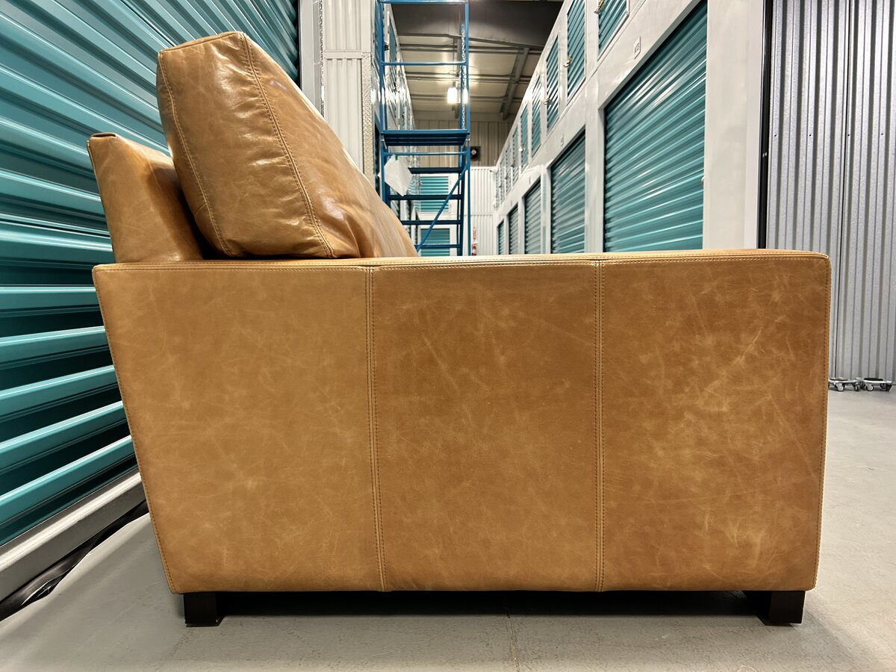
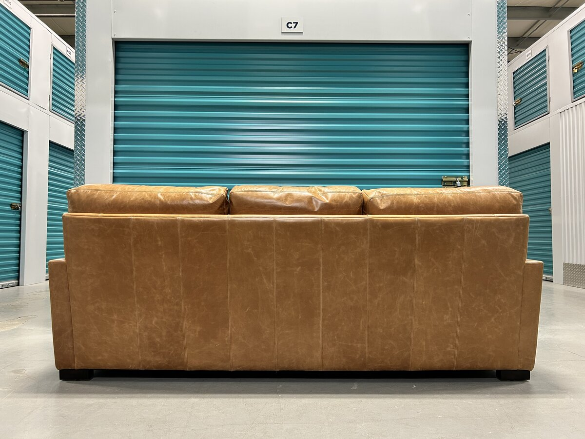

Turner Square Arm Sofa — Sandstone Keystone Leather
Description
Pottery Barn's Turner is a square-arm, contract-grade leather sofa built around clean, low lines and a deep, relaxed seat. At 86 inches wide and a generous 44 inches deep, it reads as a substantial three-seater with lounge-depth proportions suited to a real family room rather than a formal sitting room. The crisp square arms and tailored base give it a quietly modern, slightly industrial stance. The hide is the heart of this piece. It is upholstered in Pottery Barn's Sandstone colourway in their 100% top-grain, aniline-dyed Keystone leather, distressed with oil and wax to give it a heritage-like patina and a soft, lived-in character from the day it arrives. Because the leather is aniline-dyed and only lightly finished, it shows the natural grain and tonal variation unique to each hide, and it will keep lightening and softening into its own patina with use. Underneath is a serious, contract-grade build: an engineered hardwood frame with corner-block construction and no-sag sinuous steel springs, on removable solid-wood legs. Comfort is the real surprise — the loose seat cushions have a down-blend-wrapped core for a soft, forgiving sit, and the back cushions are just as cushy rather than stiff or upright. The result is a deep, sink-in seat that is genuinely, exceptionally comfortable.
Features
- 100% top-grain, aniline-dyed leather, distressed with oil and wax for a heritage patina
- Contract Grade — engineered to select ANSI/BIFMA commercial testing protocols
- Engineered hardwood frame with corner-block construction
- No-sag sinuous steel spring suspension
- Down-blend-wrapped seat cushion cores and soft, cushy back cushions for a deep, comfortable seat
- Removable solid-wood legs in a dark walnut finish
- UL GREENGUARD Gold Certified for low chemical emissions
- Imported
Condition
Includes
All designer pieces are inspected for construction, materials, and manufacturer consistency before listing.
Have one like this? We’d buy yours back — sell your leather sofa →
← All Available PiecesFrequently Asked Questions
Is the Pottery Barn Turner genuine leather?
Yes. The Turner is upholstered in 100% top-grain, aniline-dyed leather — real full-grain hide, not bonded or faux. The oil-and-wax distressing gives it a soft, broken-in hand with natural grain and tonal variation from panel to panel.
How does the Turner's aniline leather age?
Aniline-dyed leather is lightly finished, so it breathes and develops character. The Sandstone colour will lighten and soften with use and light over time, deepening into the rich, lived-in patina that is the hallmark of fine leather.
What does Contract Grade mean on the Pottery Barn Turner?
It means the sofa was engineered and tested to commercial-use standards drawn from select ANSI/BIFMA protocols — a heavier-duty build than a typical residential sofa, with an engineered hardwood frame, corner-block construction, and no-sag steel springs.
How big is the Turner Square Arm sofa from Pottery Barn, and will it fit a deeper room?
The Turner measures 86 inches wide, 44 inches deep, and 35 inches high. The 44-inch depth is deeper than a standard sofa, so it sits like a lounge piece — measure your space and doorways, and we are happy to help confirm access before delivery.
Do you deliver the Turner sofa in Edmonton?
Yes. We deliver throughout Edmonton and surrounding areas, and we arrange delivery across Alberta on request. Delivery is offered for an additional fee that depends on distance and access.